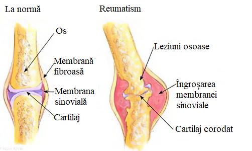

Îmi place


A 18.889 personas les gusta esto
MENȚINEREA ARTICULAȚIILOR ȘI A MUȘCHILOR INTACTE ESTE SARCINA TA PRINCIPALĂ
Boala articulară progresează dacă nu este tratată. Ceea ce faceți în fiecare zi vă afectează articulațiile și mușchii. Durerile neglijate te vor duce la handicap.
"Sunt un reumatolog orientat spre pacient. Dedicarea mea ca medic este ceea ce datorez pacienților mei și sănătății lor. Dar, de asemenea, cred că cucerirea sănătății depinde nu numai de medic, ci și de tine ca pacient. Tu ești personajul principal al recuperării tale. Rețineți că majoritatea bolilor reumatice sunt cronice și depind de vizitele regulate la un reumatolog.”

Bolile reumatice afectează sistemul musculo-scheletic (mușchii,
tendoanele, oasele, ligamentele, articulațiile și țesutul
conjunctiv). Provoacă dureri și limitări dacă nu sunt tratate la
timp.
Acțiunile pe care le facem în fiecare zi - să ne îmbrăcăm, să ne
spălăm pe dinți, să deschidem o sticlă, să tăiem o friptură, să ne
încălțăm pantofii - sunt imposibile sau foarte dificile pentru mulți
oameni.
Bolile aparatului locomotor au cel mai mare impact asupra calității
vieții. Sunt, de asemenea, una dintre principalele cauze ale
dizabilității și invalidității.
Campania comunității române de reumatologi Reumanizar, împreună cu
reumatologul Antonio Ponce Vargas, au dezvoltat și testat un produs
care va ameliora bolile musculare și articulare fără dificultate și
tratament pe termen lung.
Cremă - un complex pentru sănătatea articulațiilor și a mușchilor, acționează asupra zonelor afectate. cremă elimină efectiv durerea, inflamația și disconfortul la nivelul articulațiilor și mușchilor.
- elimină durerea, inflamația și disconfortul la nivelul articulațiilor și mușchilor
- ameliorează spasmele musculare ale spatelui, gâtului, umerilor, brațelor și picioarelor
- accelerează procesul de vindecare după leziuni
- restabilește elasticitatea țesuturilor conjunctive
- reduce fricțiunea articulațiilor
- previne procesele distructive la nivelul articulațiilor
- ajută la refacerea țesutului cartilajului al articulațiilor
- inhibă creșterea spinilor osoși
"Unul dintre obiectivele mele este să protejez interesele
pacientului, problemele sale personale. Interesele mele sunt legate
de artrită, osteoartrita și spondiloartrit."
Dezvoltarea produsului
este o acțiune care a
ajutat pacienții să recâștige sănătatea și calitatea vieții pierdute
din cauza bolii reumatice.

Tânărul pianist, a cărui carieră a fost întreruptă de artrita cronică juvenilă, cântă acum într-un grup pop internațional.
Un șofer de tractor care nu numai că nu era în stare să îndeplinească sarcinile de bază ale profesiei sale, dar avea nevoie și de ajutor în viața de zi cu zi. Soția lui îl ajuta să se spele și să se îmbrace din cauza diagnosticului de polimialgie reumatică. După ce a folosit cremă timp de o lună, a reușit să ducă o viață normală.
O gospodină cu fibromialgie, sindrom Ehlers-Danlos, osteoartrită, nu putea face treburile casnice, nu putea avea grijă de familia ei. După tratamentul cu cremă , calitatea vieții ei a fost restabilită. Acum poate face ceea ce îi place.
Câți oameni cu diagnostice și ocupații diferite pot reveni la viața normală, grație dezvoltării reumatologului Antonio Ponce Vargas și campaniei Reumanizar.

Oferiți-vă libertate de mișcare și activitate pe tot parcursul zilei cu formula unică penetrantă a cremă . Principalele ingrediente active sunt uleiul de ficat de rechin, glucozamină, chitosan, condroitină și colagen. cremă trebuie aplicată pe zonele cu probleme, frecând cu mișcări circulare până la absorbția completă. Aplicați de 2-3 ori pe zi până dispare inflamația.
Organizația Medicală Universitară (OMS) a acreditat și a verificat conformitatea cu cerințele și standardele de calitate ale activităților profesionale și instituționale.
Acest certificat este valabil pentru perioada 2020-2025 și este considerat public. Cu ajutorul său, intenționăm să garantăm cetățenilor că dezvoltarea unui nou produs pentru tratamentul bolilor reumatologice este sigură și vizează furnizarea celui mai bun tratament medical.